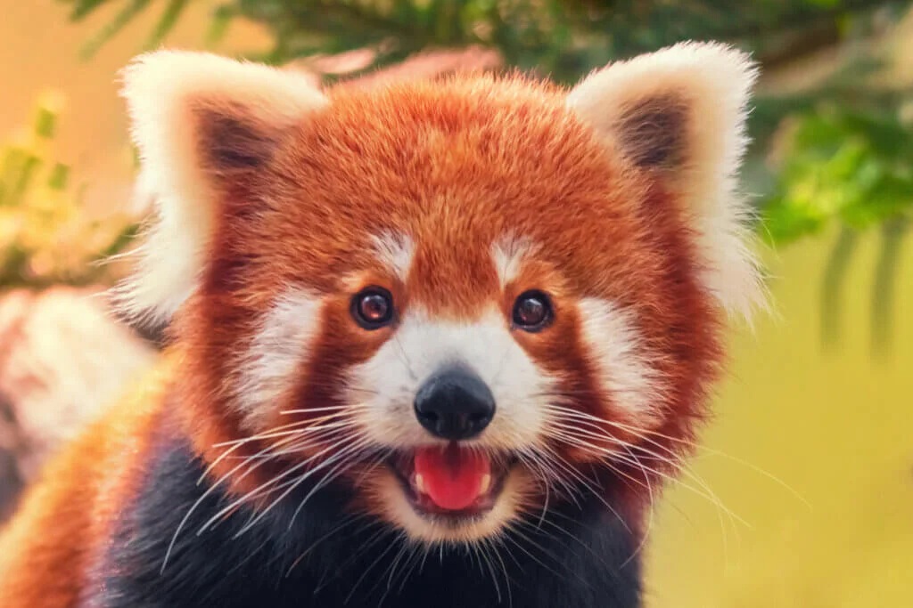
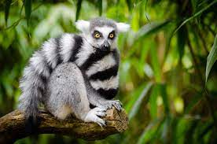
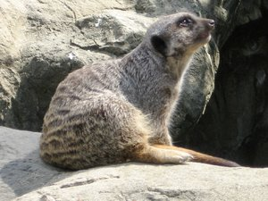
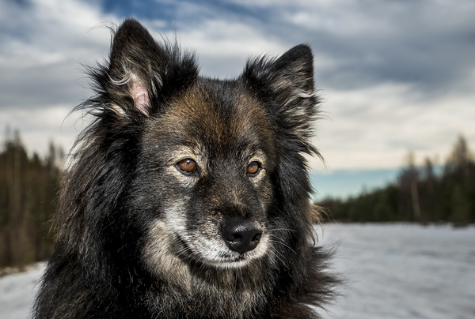
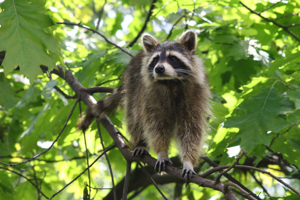

1500 likes
El panda, oso panda o panda gigante (Ailuropoda melanoleuca) es una especie de mamífero del
orden de los carnívoros. El estudio de su ADN lo engloba entre los miembros de la familia de los osos (Ursidae).
Comentarios

600 likes
Marmota es un género de roedores esciuromorfos de la familia Sciuridae, conocidos comúnmente
como marmotas, de donde toman el nombre científico. Aunque están estrechamente emparentadas con las ardillas.
Comentarios

700 likes
El zorro común o zorro rojo (Vulpes vulpes), también llamado raposo o raboso, es una especie de mamífero de la familia cánidos, de distribución holártica.
Comentarios

900 likes
Los lémures son unos primates estrepsirrinos endémicos de la isla de Madagascar. Reciben su nombre por los lemures, fantasmas o espíritus de la mitología.
Comentarios

500 likes
Los fócidos o focas verdaderas (Phocidae) son una familia de mamíferos pinnípedos adaptados a vivir en medios acuáticos la mayor parte del tiempo..
Comentarios

430 likes
Los fócidos o focas verdaderas (Phocidae) son una familia de mamíferos pinnípedos adaptados a vivir en medios acuáticos la mayor parte del tiempo..
Comentarios
230 likes
El perro (Canis familiaris o Canis lupus familiaris, dependiendo de si se lo considera una especie por derecho propio o una subespecie del lobo).
Comentarios

683 likes
El lobo (Canis lupus) es una especie de mamífero placentario del orden de los carnívoros. El perro doméstico (Canis familiaris) se consideraba miembro.
Comentarios

562 likes
Procyon (del griego: pro 'antes de'; κῠων [cyon] 'perro') es un género de mamíferos carnívoros de la familia Procyonidae conocidos comúnmente como mapaches.
Comentarios